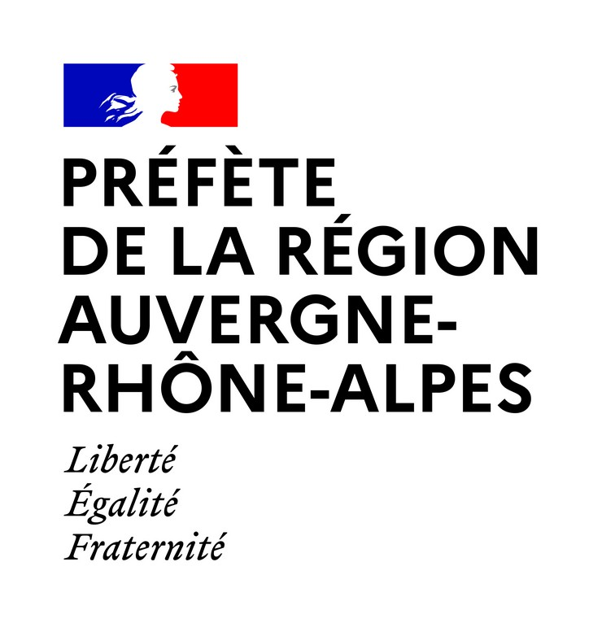

<header class="fr-header">
  <div style="width:100%; display:flex; align-items:center; justify-content:space-between; padding:10px 20px;">
    <!-- Logo gauche -->
    
    <!-- Bloc titre + sous-titre centré -->
    <div style="flex:1; text-align:center; line-height:1.2;">
      <!-- Titre principal -->
      <div style="font-weight:bold; color:#000091; font-size:22px;">
        Cartographie des Projets Alimentaires Territoriaux
      </div>
      <!-- Sous-titre -->
      <div style="font-size:14px; font-weight:normal; color:#000091; margin-top:4px;">
        de la Région Auvergne Rhône Alpes
      </div>
    </div>
    <!-- Spacer droite pour équilibrer le flex -->
    <div style="width:70px;"></div>
  </div>
</header>